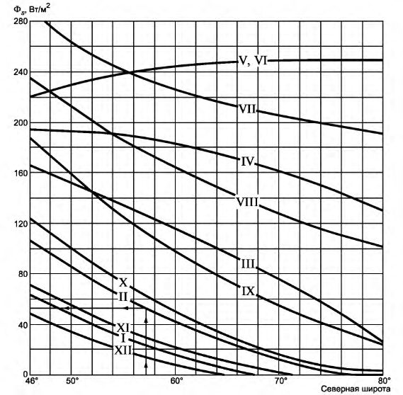
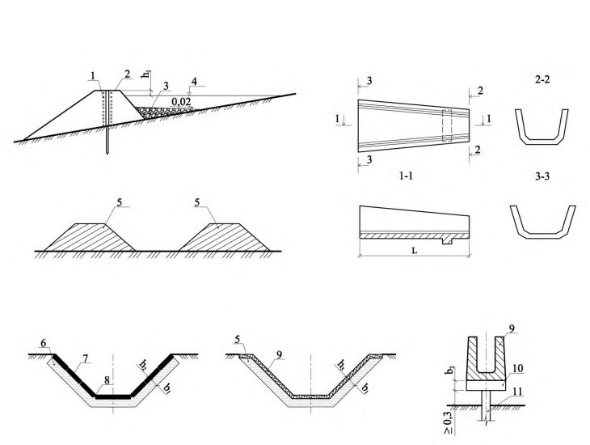
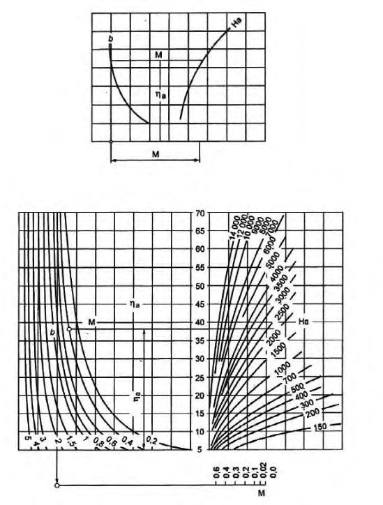
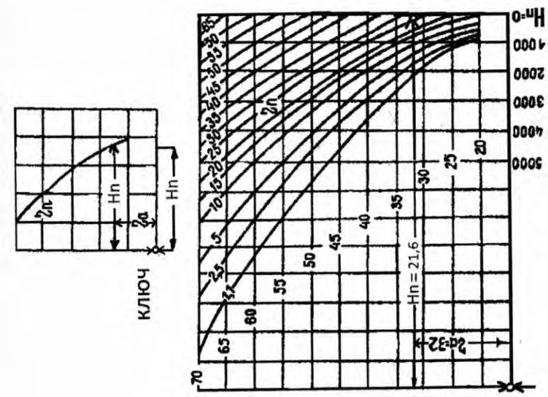

СП 498.1325800.2020 «Основания и фундаменты зданий и сооружений на многолетнемер»
О документе: разработчики, утверждение, регистрация, ключевые слова
СВОД ПРАВИЛ
СП 498.1325800.2020
Издание официальное
Москва 2020
1 ИСПОЛНИТЕЛЬ - Акционерное общество «Научно-исследовательский центр «Строительство» (АО «НИЦ «Строительство») -Научно-исследовательский, проектно-изыскательский и конструкторско-технологический институт оснований и подземных сооружений (НИИОСП) им. Н.М. Герсеванова
2 ВНЕСЕН Техническим комитетом по стандартизации ТК 465 «Строительство»
3 ПОДГОТОВЛЕН к утверждению Департаментом градостроительной деятельности и архитектуры Министерства строительства и жилищнокоммунального хозяйства Российской Федерации (Минстрой России)
4 УТВЕРЖДЕН приказом Министерства строительства и жилищнокоммунального хозяйства Российской Федерации от 30 декабря 2020 г. № 910/пр и введен в действие с 1 июля 2021 г.
5 ЗАРЕГИСТРИРОВАН Федеральным агентством по техническому регулированию и метрологии (Росстандарт)
6 ВВЕДЕН ВПЕРВЫЕ
В случае пересмотра (замены) или отмены настоящего свода правил соответствующее уведомление будет опубликовано в установленном порядке. Соответствующая информация, уведомление и тексты размещаются также в информационной системе общего пользования - на официальном сайте разработчика (Минстрой России) в сети Интернет
© Минстрой России, 2020
Настоящий нормативный документ не может быть полностью или частично воспроизведен, тиражирован и распространен в качестве официального издания на территории Российской Федерации без разрешения Минстроя России
Дата введения - 2021-07-01
УДК 69+624.15:624.139
ОКС 93.020
Ключевые слова: инженерная подготовка территории, многолетнемерзлые грунты, вертикальная планировка, предварительное оттаивание, предварительное промораживание
ИСПОЛНИТЕЛЬ
АО «НИЦ «Строительство»
Руководитель
организации-
разработчика
Заместитель генерального
директора по научной работе, д.т.н.
\_\_\_\_\_\_\_\_\_\_\_
А.И Звездов
Руководитель разработки
Директор НИИОСП им.
Н.М. Герсеванова, к.т.н.
\_\_\_\_\_\_\_\_\_\_\_
И.В. Колыбин
Ответственный исполнитель:
Руководитель ЦГГИ, к.т.н.
\_\_\_\_\_\_\_\_\_\_\_
А.Г.Алексеев
Введение
Настоящий свод правил разработан в целях обеспечения соблюдения требований Федерального закона от 30 декабря 2009 г. № 384-ФЗ «Технический регламент о безопасности зданий и сооружений».
Работа выполнена авторским коллективом АО «НИЦ «Строительство» НИИОСП им. Н.М. Герсеванова (руководители работы -канд. техн. наук И.В. Колыбин , канд. техн. наук А.Г. Алексеев ; канд. техн. наук М.В. Рабинович, С.А. Виноградова, П.М. Сазонов ).
1Область применения
2Нормативные ссылки
В настоящем своде правил использованы ссылки на следующие нормативные документы:
ГОСТ 12248-2010 Грунты. Методы лабораторного определения характеристик прочности и деформируемости
СП 22.13330.2016 «СНиП 2.02.01-83* Основания зданий и сооружений» (с изменениями № 1, № 2, № 3)
СП 25.13330.2012 «СНиП 2.02.04-88 Основания и фундаменты на вечномерзлых грунтах» (с изменениями № 1, № 2, № 3, № 4)
- СП 31.13330.2012 «СНиП 2.04.02-84 Водоснабжение. Наружные сети и сооружения» (с изменениями № 1, № 2, № 3, № 4, № 5)
СП 32.13330.2018 «СНиП 2.04.03-85 Канализация. Наружные сети и сооружения» (с изменением № 1)
СП 45.13330.2017 «СНиП 3.02.01-87 Земляные сооружения, основания и фундаменты» (с изменениями № 1, № 2)
ОСНОВАНИЯ И ФУНДАМЕНТЫ ЗДАНИЙ И СООРУЖЕНИЙ НА МНОГОЛЕТНЕМЕРЗЛЫХ ГРУНТАХ Требования к инженерной подготовке территории
Soil bases and foundations of buildings and structures on permafrost soils. Requirements for land development of the area
СП 47.13330.2016 «СНиП 11-02-96 Инженерные изыскания для строительства. Основные положения»
СП 48.13330.2019 «СНиП 12-01-2004 Организация строительства»
СП 76.13330.2016 «СНиП 3.05.06-85 Электротехнические устройства»
СП 78.13330.2012 «СНиП 3.06.03-85Автомобильные дороги» (с изменением № 1)
СП 100.13330.2016 «СНиП 2.06.03-85 Мелиоративные системы и сооружения» (с изменением № 1)
СП 104.13330.2016 «СНиП 2.06.15-85 Инженерная защита территории от затопления и подтопления»
СП 115.13330.2016 «СНиП 22-01-95 Геофизика опасных природных воздействий»
СП 116.13330.2012 «СНиП 22-02-2003 Инженерная защита территорий, зданий и сооружений от опасных геологических процессов. Основные положения»
СП 131.13330.2018 «СНиП 23-01-99* Строительная климатология»
СП 250.1325800.2016 Здания и сооружения. Защита от подземных вод
СП 313.1325800.2017 Дороги автомобильные в районах вечной мерзлоты. Правила проектирования и строительства
СП 354.1325800.2017 Фундаменты опор мостов в районах распространения многолетнемерзлых грунтов. Правила проектирования и строительства
СП 410.1325800.2018 Трубопроводы магистральные и промысловые для нефти и газа. Строительство в условиях вечной мерзлоты и контроль выполнения работ
СП 445.1325800.2018 Водопропускные трубы и системы водоотвода в районах вечной мерзлоты. Правила проектирования
СП 447.1325800.2019 Железные дороги в районах вечной мерзлоты. Основные положения проектирования
Примечание - При пользовании настоящим сводом правил целесообразно проверить действие ссылочных документов в информационной системе общего пользования - на официальном сайте федерального органа исполнительной власти в сфере стандартизации в сети Интернет или по ежегодному указателю «Национальные стандарты», который опубликован по состоянию на 1 января текущего года, и по выпускам ежемесячного информационного указателя «Национальные стандарты» за текущий год. Если заменен ссылочный документ, на который дана недатированная ссылка, то рекомендуется использовать действующую версию этого документа с учетом всех внесенных в данную версию изменений. Если заменен ссылочный документ, на который дана датированная ссылка, то рекомендуется использовать версию этого документа с указанным выше годом утверждения (принятия). Если после утверждения настоящего свода правил в ссылочный документ, на который дана датированная ссылка, внесено изменение, затрагивающее положение, на которое дана ссылка, то это положение рекомендуется применять без учета данного изменения. Если ссылочный документ отменен без замены, то положение, в котором дана ссылка на него, рекомендуется применять в части, не затрагивающей эту ссылку. Сведения о действии сводов правил целесообразно проверить в Федеральном информационном фонде стандартов.
3Термины и определения
В настоящем своде правил применены термины по СП 116.13330, СП 115.13330 и СП 25.13330, а также следующие термины с соответствующими определениями:
- 3.1внутриплощадочные инженерные сети
- Cети инженерно-технического обеспечения, электрические сети и сети связи, обеспечивающие подачу соответствующих ресурсов и услуг потребителям, размещение которых осуществляется в границах земельных участков объектов капитального строительства.
- 3.2морозобойное растрескивание
- Процесс образования трещин различной ориентации, глубины и ширины раскрытия в слое сезонного оттаивания и в подстилающем массиве многолетнемерзлых грунтов, вследствие их деформирования в динамично изменяющемся градиентном температурном поле.
- 3.3насыпь
- Инженерное земляное сооружение из насыпного грунта, в пределах которого вся поверхность земляного полотна расположена выше уровня земли (подстилающего грунта).Источник: СП 78.13330.2012, пункт 3.65
- 3.4поверхностные (дождевые, ливневые, талые) сточные воды
- Сточные воды, которые образуются в процессе выпадения дождей и таяния снега. [СП 32.13330.2018, пункт 3.5]
4Общие положения
При строительстве по принципу II инженерная подготовка содержит мероприятия по предварительному оттаиванию мерзлых грунтов с последующим их уплотнением и осушением переувлажненных грунтов до начала строительства.
- предварительное промораживание или оттаивание основания застраиваемой территории;
- вертикальная планировка территории строительной площадки с обеспечением стоков поверхностных и надмерзлотных вод;
- защита территории от затопления или подтопления;
- инженерная защита от опасных криогенных процессов при их выявлении или прогнозировании;
- устройство временных дорог;
- перекладка существующих инженерных сетей и прокладка временных;
- создание монтажных площадок и устройство складов для хранения материалов, изделий и конструкций;
- восстановление проектных отметок планировочных насыпей в случае их локальных просадок и размывов;
- восстановление нарушенных в процессе строительства природных условий, включающих в себя мероприятия по рекультивации и восстановлению почвеннорастительного слоя, засыпке выемок, траншей и карьеров, выполаживанию и одернованию склонов и откосов (природоохранные мероприятия).
Состав и объем требуемых мероприятий для инженерной подготовки территории принимается на основе технико-экономического сравнения вариантов, учитывая их комплексную стоимость (совокупность единовременных и эксплуатационных расходов), трудоемкость, степень надежности и эффективности.
СП .1325800.2020 поверхностных вод с застраиваемой территории следует проводить с учетом направления их в естественные тальвеги, открытые водоемы и реки с соблюдением требований по их очистке. В пределах застроенной территории отвод поверхностных вод со строительной площадки выполняется в централизованную систему ливневой канализации и не допускается выпуск поверхностных вод в водоемы, являющиеся источниками водоснабжения, в размываемые овраги и в замкнутые котлованы.
Примечание - Применение различных принципов допускается при условии прокладки сетей в каналах на таком расстоянии от зданий и сооружений, при котором не произойдет изменения расчетных температур их оснований.
5Вертикальная планировка и организация поверхностного стока
5.1Основные положения по проектированию
Высоту подсыпок, глубину выемок грунтов, уклон водоотводящей сети следует принимать с учетом расчетных осадок грунтов при оттаивании. При наличии сильнольдистых ( i i > 0,4), заторфованных ( I r > 0,25) грунтов или грунтов, имеющих неравномерную льдистость, осуществляется частичное оттаивание, замена грунтов верхнего льдистого слоя или устройство теплозащитных экранов.
Проектные решения вертикальной планировки строительной площадки представляются в проектной документации в соответствии с [1, раздел 2].
5.2Вертикальная планировка территории при строительстве по принципу I
СП .1325800.2020 допустимые значения для проектируемых сооружений в соответствии с СП 22.13330. Сохранение или понижение температур ММГ оснований следует проводить:
- поверхностным охлаждением грунтов в зимнее время (регулярное снятие снежного покрова с поверхности);
- устройством установок естественного холода [сезоннодействующих охлаждающих установок (СОУ)];
- устройством установок искусственного холода (холодильных машин);
- устройством теплоизоляционной или охлаждающей насыпи.
При наличии в основании пластичномерзлых грунтов, вмещающих водонасыщенные горизонты и прослои, необходимо устраивать вертикальные дренажи скважинного типа для понижения влажности грунтов таликовых зон до значений, исключающих развитие в них процессов пучения из-за искусственного промораживания.
Теплотехнический расчет основания производится по методике, изложенной в приложении Б, и численным моделированием теплового взаимодействия установок с грунтовым массивом. Результаты теплотехнических расчетов, содержащие описание конструктивных особенностей установок, план расположения на площадке, их глубину заложения и количество отражают в проектной документации в соответствии с 5.1.1.
Срезка отдельных бугров и(или) замена их крупноскелетным грунтом допускается в исключительных случаях на участках, где нижележащие слои грунта нельдистые или слабольдистые ( i i < 0,2). При применении срезок и выемок грунта необходимо принять меры по защите вскрытых льдистых грунтов от протаивания, размыва и оползания склонов.
где 𝑑𝑡h - глубина сезонного промерзания - оттаивания насыпи, м, определяемая по формуле
здесь μ - коэффициент, учитывающий отток тепла в подстилающие насыпь ММГ при ее сезонном оттаивании, определяемый по формуле
где 𝑇0 - среднегодовая температура грунта на подошве слоя сезонного оттаивания при наличии насыпи, ºС, определяется по 5.2.14. λ𝑡h - коэффициент теплопроводности материала насыпи в талом состоянии, Вт/(м∙ºС);
Ω𝑠 ∗ - сумма градусо-часов поверхности насыпи в летний период, определяемая по 5.2.13;
𝐿𝑡𝑜𝑡 -затраты тепла на оттаивание 1 м³ материала насыпи, Вт∙ч/м³ , определяемые по формуле
где 𝐿0 - удельная теплота фазовых превращений вода-лед в расчете на единицу массы, 93 Вт∙ч/кг; ρ𝑑,𝑓 - плотность мерзлого материала насыпи в сухом состоянии, кг/м³ ; 𝑤𝑡𝑜𝑡 - суммарная влажность мерзлого материала насыпи, д.е.
где 𝑚 - количество летних месяцев;
𝑇𝑛,𝑖 - среднемесячная температура поверхности насыпи, ºС, определяемая по формуле
где 𝑇 𝑠,𝑖 - среднемесячная температура атмосферного воздуха, ºС, определяемая по СП 131.13330;
𝑅𝑖 - радиационный баланс поверхности насыпи, Вт /м² , равный:
- (0,61Ф s,i -20) - для песчаных, щебеночных и асфальтовых поверхностей;
- (0,61Ф s,i -40) - для бетонных и железобетонных покрытий.
𝑄𝑖 -потери тепла дневной поверхности за счет испарения и нагрева подстилающих пород и фазовых переходов в них, Вт /м² , определяют по формуле
где Ф𝑠,𝑖 -суммарная солнечная радиация в i -й летний месяц, Вт/м² , устанавливаемая на основе гидрометеорологических сведений для участка строительства, а при их отсутствии - по данным графиков на рисунке 5.1;
Рисунок 5.1 - Зависимость суммарной солнечной радиации Ф s от широты местности (I - XII месяцы года)

α𝑖 - коэффициент теплообмена поверхности с атмосферой, Вт /м² , равный:
- (2,4 i +2,3) - при средней месячной скорости ветра i < 4,6 м/с;
- 3,7( i -1) - при средней месячной скорости ветра i > 4,6 м/с.
где Ω𝑤 - сумма градусо-часов температуры атмосферного воздуха в зимний период;
λ𝑓 - коэффициент теплопроводности материала насыпи в мерзлом состоянии, Вт/(м∙ºС);
𝑅𝑠 - среднезимнее термическое сопротивление снежного покрова, (м² ∙ºС)/ Вт; 𝑡𝑦 - продолжительность года, равная 8760 ч.
- на малольдистых грунтах ( i i < 0,2) - с ограничением глубины оттаивания на основании расчетов фундаментов зданий и сооружений по предельным состояниям второй группы в соответствии с СП 25.13330;
- на льдистых основаниях (0,2 < i i ≤ 0,4) - с укладкой слоя теплоизоляции под откосной частью и на берме;
- на сильнольдистых основаниях ( i i > 0,4) и основаниях, имеющих подземные льды на глубине менее двойной мощности слоя сезонного оттаивания;
- с укладкой под насыпью слоя теплоизоляции или системы горизонтальных охлаждающих труб.
где 𝑑𝑡h,𝑛 и 𝑑𝑡h𝑠,𝑛нормативные глубины сезонного промерзания-оттаивания соответственно природного грунта и грунта насыпи, м, определяемые согласно приложению Г СП 25.13330.2012; 𝑑𝑡h ′ - допустимая глубина сезонного оттаивания природного грунта под насыпью, м.
где 𝑑𝑝 - диаметр испарителя термостабилизатора, м; 𝑑𝑡h - глубина сезонного промерзания-оттаивания охлаждающей грунтовой насыпи, м, определяемая по формуле
где Ω𝑠 ∗ , 𝜆𝑡h , 𝐿 𝑡𝑜𝑡 , 𝜇 - см. формулы (5.2) и (5.4);
𝑅𝑖𝑠 -термическое сопротивление теплоизоляции, укладываемой у поверхности насыпи, (м² ∙ºС)/ Вт.
где Ω𝑤,𝐿𝑡𝑜𝑡, λ 𝑓 , 𝑡 𝑦 - см. формулу (5.8); χ и ξ - вспомогательные параметры, определяемые по формулам (5.13) и (5.14):
где 𝑏𝑝 - расстояние между испарителями (шаг расстановки термостабилизаторов), м;
𝑅 𝑖𝑛 -внутренние термическое сопротивление термостабилизатора, (м² ∙ºС)/ Вт;
𝑘h -эмпирический коэффициент, учитывающий снижение тепловосприятия термостабилизаторов из-за горизонтального расположения испарителя, следует определять по таблице 5.1.
(5.14) 𝑑𝑡h - см. формулу (5.10); 𝜆 𝑓 , 𝑅 𝑠 - см. формулу (5.8); 𝑅𝑖𝑠 - см. формулу (5.11).
Таблица 5.1
| Рабочее тело | 𝑘 h , при термическом сопротивлении 𝑅 𝑖𝑠 , (м² ∙ºС)/ Вт | 𝑘 h , при термическом сопротивлении 𝑅 𝑖𝑠 , (м² ∙ºС)/ Вт | 𝑘 h , при термическом сопротивлении 𝑅 𝑖𝑠 , (м² ∙ºС)/ Вт | 𝑘 h , при термическом сопротивлении 𝑅 𝑖𝑠 , (м² ∙ºС)/ Вт | 𝑘 h , при термическом сопротивлении 𝑅 𝑖𝑠 , (м² ∙ºС)/ Вт | 𝑘 h , при термическом сопротивлении 𝑅 𝑖𝑠 , (м² ∙ºС)/ Вт | 𝑘 h , при термическом сопротивлении 𝑅 𝑖𝑠 , (м² ∙ºС)/ Вт | 𝑘 h , при термическом сопротивлении 𝑅 𝑖𝑠 , (м² ∙ºС)/ Вт | 𝑘 h , при термическом сопротивлении 𝑅 𝑖𝑠 , (м² ∙ºС)/ Вт |
|---|---|---|---|---|---|---|---|---|---|
| 0,09 | 0,04 | 0,0028 | 0,022 | 0,017 | 0,015 | 0,012 | 0,01 | 0,009 | |
| Аммиак | 1,00 | 0,85 | 0,80 | 0,75 | 0,68 | 0,65 | 0,60 | 0,57 | 0,50 |
| Хладон 12 | 0,75 | 0,5 | 0,35 | 0,32 | 0,30 | 0,27 | 0,24 | 0,20 | 0,18 |
5.3Вертикальная планировка территории при строительстве по принципу II
- льдистость мерзлого грунта, изменения содержания льда в слоях грунта по глубине и горизонтальном направлении;
- значение расчетной осадки грунтов при оттаивании;
- температуру мерзлых грунтов;
- водопроницаемость грунтов в оттаявшем состоянии;
- наличие электроэнергии и доступность механизмов и оборудования.
При этом следует предусматривать меры по обеспечению установленной проектом степени уплотнения оттаявшего грунта. Механическое уплотнение оттаявших или талых маловажных песчано-глинистых грунтов выполнять трамбованием, виброуплотнением и пневмоударным уплотнением с армированием жесткими связями (щебень, гравий).
При проектировании электрооттаивания, парооттаивания, гидрооттаивания на площадке следует выполнять теплотехнические расчеты основания. Теплотехнический расчет основания производится численным моделированием теплового взаимодействия установок с грунтовым массивом. Результаты теплотехнических расчетов, содержащие описание конструктивных особенностей установок, план расположения на площадке, их глубина заложения и количество, отражают в проектной документации в соответствии с 5.1.1.
где 𝑔 - ускорение силы тяжести, 9,81 м/с 2 ; 𝑚𝑡h,𝑖 -коэффициент сжимаемости, кПа -1 , оттаивающего грунта, определяемый по ГОСТ 12248 с учетом требований пункта 7.3.8 СП 25.13330.2012; h𝑝,𝑡h - глубина предварительного оттаивания, м; ρ𝑑𝑎𝑚 - плотность грутовой пригрузки, кг/м³ ; h𝑑𝑎𝑚 - толщина слоя грунтовой пригрузки, м, при ее отсутствии принимается равной нулю; ρ𝑠𝑏 - плотность оттаявшего грунта во взвешенном состоянии, кг/м³ ;
𝑈𝑧,𝑟 -степень фильтрационной консолидации грунта, определяемая по формуле
где 𝑈𝑧 - степень фильтрационной консолидации грунта при оттоке воды в вертикальном направлении (к дневной поверхности);
𝑈𝑟 - степень фильтрационной консолидации грунта при оттоке воды в горизонтальном направлении (к вертикальным дренам). При отсутствии вертикального дренажа принимают равной нулю.
𝑐 - коэффициент фильтрационной консолидации, вычисляется по формуле
где 𝑘ф - коэффициент фильтрации оттаянного грунта, м/ч; остальные обозначения см. формулу (5.15); 𝑡 - время выстойки оттаявшего грунта, без полезной нагрузки, отсчитывается от окончания оттаивания, ч; h𝑝,𝑡h - см. формулу (5.15); 𝑘0 - эмпирический коэффициент, учитывающий увеличение фильтрации воды в сторону вертикальной дрены под действием электрического потенциала, принимается равным от 10 до 100 при наличии электроосмоса и при его отсутствии - единице; 𝑙𝑑 - половина расстояния между вертикальными дренами; 𝑟 𝑑 - радиус вертикальной дрены.
- полную или частичную замену засоленных, заторфованных ( I r > 0,25), льдистых грунтов ( i i > 0,4) и льдов песчано-гравийными смесями, щебнем и т. п.;
- армирование оттаявших глинистых грунтов песчаными или гравийными сваями;
- предварительное уплотнение слабых грунтов временной или постоянной пригрузкой;
- механическое уплотнение оттаявших или талых грунтов;
- виброфлотацию рыхлых песков;
- искусственное осушение грунтов (водопонижение).
В зависимости от инженерно-геологических условий и решаемых задач возможно комплексное применение перечисленных методов.
6Защитные мероприятия при прогнозировании и выявлении опасных геокриологических процессов
Осуществление мероприятий инженерной защиты не должно приводить к активизации опасных криогенных процессов на склонах и примыкающих территориях. Техническая эффективность и надежность сооружений и мероприятий инженерной защиты должны подтверждаться расчетами или моделированием (натурным, физическим или математическим).
- сохранить или поднять положение верхней границы ММГ в соответствии с разделом 5;
- не допускать нарушение растительного покрова территории, при вырубке деревьев и кустарников, не допускать корчевания пней, на временно оголенных местах допускать проезд транспорта;
- не допускать точечное складирование снега при его уборке, для недопущения деградации мерзлого грунта под ним при строительстве по принципу I;
- организовать и регулировать поверхностный и подземный сток с помощью ливневой канализации и систем дренажных сооружений.
При наличии на застраиваемой площадке грунтов, подверженных морозному пучению, в слое сезонного оттаивания необходимо предусматривать понижение уровня подземных вод и осушение грунтов в пределах слоя сезонного оттаивания в соответствии с разделом 12 СП 116.13330.2012. При производстве работ по вертикальной планировке следует учитывать амплитудные колебания дневной поверхности (гидротермические деформации) путем оценки величины и интенсивности пучения.
Допускается полная или частичная ликвидация оврагов, тальвегов и других элементов рельефа, служащих водоприемниками, путем их засыпки с устройством
СП .1325800.2020 на их месте искусственных дрен (прокладка водосточных и дренажных коллекторов).
7Особенности устройства инженерной подготовки строительной площадки
- распределения атмосферных осадков в течение года (наибольшее количество осадков в зимний период, количество выпадающих осадков весной в период снеготаяния, распределение количества осадков летом);
- испарения воды с грунтовой поверхности в летние месяцы;
- длительности летнего строительного сезона (период времени между переходом температуры воздуха через плюс 5 ºC весной и минус 5 ºC осенью).
- очистку территории от деревьев и кустарников;
- осушение территории и организацию водоотвода;
- отсыпку временных дорог, подъездных путей, площадок для складирования строительных материалов и т.п.;
- прокладку внутриплощадочных инженерных сетей.
СП .1325800.2020 объеме, предусмотренном рабочим проектом, с учетом продувки земляного полотна при сильных ветрах.
.
АПриложение А. Конструктивные решения водоотводных элементов при строительстве по принципу I
А.1 Поперечное сечение кюветов и лотков следует проектировать трапецеидальной формы с пологими укрепленными откосами, представленными на рисунке А.1.
А.2 Крепление откосов следует выполнять монолитным бетоном, железобетонными и армоцементными плитами или готовыми железобетонными блоками (лотки телескопического типа), укладываемыми на гидроизолированный теплоизолирующий слой. В качестве теплоизоляции следует использовать естественные (торф, мох и дерн) или искусственные теплоизоляционные материалы (плиты из негигроскопичных пористых материалов на неорганических вяжущих или на основе из пластических масс). Гидроизоляцию необходимо выполнять асфальтовой мастикой, рулонным материалом или эластичной пленкой, наклеиваемой на основание.
А.3 Размеры поперечных сечений водоотводных сооружений назначают по гидравлическому расчету в соответствии с СП 32.13330, учитывая приток и глубину залегания вод, осушаемую площадь и инженерно-гидрогеологические условия площадки.
1 - упорная плетневая стена; 2 - одерновка; 3 - крупный гравий по мху; 4 - уровень воды; где h 1 = 0,25 м; 5 - грунтовые валики из уплотненных глинистых грунтов; 6 - теплоизоляционный материал толщиной b 1 = 0,15...0,2 м; 7 - одежда из сборных армоцементных или железобетонных плит толщиной h 2 = 0,05 м; 8 - заделка швов эластичным герметиком;

- сборные фасонные железобетонные блоки толщиной h 3= 0,06...0,08 м; 10 -
а - водоотводной вал; б - телескопический лоток, стандартная длина в заводском исполнении L= 1,5 м; в - водоотводная канава по ненарушенному растительному покрову; г, д водоотводные канавы и лотки; е водоотводный лоток по сваям
Рисунок А.1 - Водоотводные элементы открытой ливневой канализации где λ𝑓 , 𝑟 𝑝 - см. формулу (Б.2);
БПриложение Б. Теплотехнический расчет основания при охлаждении или замораживании грунтов сезоннодействующих охлаждающих установок
Б.1 При первичном расчете допускается располагать установки в шахматном порядке сеткой 1,73 rf × 1,5 rf , где rf -радиус льдогрунтового цилиндра вокруг скважины с установкой в зимний период.
Б.2 Радиус льдогрунтового цилиндра вокруг установки в зимний период определяют по формуле
где 𝑟 𝑝 - радиус испарителя установки; η𝑎 - безразмерный коэффициент, определяемый по номограмме на рисунке Б.1 в зависимости от безразмерных коэффициентов b , M и Ha , вычисляемых по формулам:
где λ𝑓 - теплопроводность грунта в мерзлом состоянии, Вт/(м∙ºС); 𝑟 𝑝 - см. формулу (Б.1);
𝑅𝑖𝑛 -внутреннее термическое сопротивление СОУ теплообмену, определяемое в соответствии с Б.4.
- при охлаждении пластичномерзлых, сильнольдистых грунтов ( i i > 0,4) и подземных льдов M и Ha определяют по формулам:
где 𝑇0 - начальная температура грунта у подошвы слоя с годовыми теплооборотами, ºС;
𝑇 𝑓 - максимальная температура грунта в твердомерзлом состоянии, ºС;
𝑇𝑖𝑛 - средняя по длине колонки температура рабочего тела, ºС.
𝑇𝑏𝑓 - температура начала замерзания грунта, ºС;
𝑇𝑖𝑛 - см. формулу (Б.3); 𝑡 𝑓 - продолжительность охлаждения, замораживания, ч;
𝐿𝑤 - количество тепла, отводимое при охлаждении 1 м³ , Вт∙ч/м³ ;
Рисунок Б.1 - Номограмма для расчета радиуса льдогрунтового цилиндра в зимний период (к началу летнего периода) и за весь период непрерывного охлаждения или замораживания

- при замораживании несквозных таликовых зон M и Ha определяют по формулам:
где λ𝑡h - теплопроводность грунта в талом состоянии, Вт/(м∙ºС);
𝑇0 - см. формулу (Б.3);
𝑇𝑏𝑓 , λ 𝑓 , 𝑇 𝑖𝑛 - см. формулу (Б.4);
- количество тепла, отводимое при замораживании 1 м³ , Вт∙ч/м³ ;
𝐿𝑡h Остальные обозначения см. формулу (Б.4).
Б.3 Радиус льдогрунтового цилиндра вокруг СОУ в летний период определяется по формуле
где 𝑟 𝑝 - радиус испарителя установки; ηη - безразмерный коэффициент, определяемый по номограмме на рисунке Б.2 в зависимости от безразмерных коэффициентов η𝑎 и Hn , вычисляемых по формулам:
где 𝑟 𝑓 и 𝑟 𝑝 - см. формулы (Б.1) и (Б.2);
где 𝜆𝑡h - теплопроводность грунта в талом состоянии, Вт/(м∙ºС); 𝑡 𝑡h - продолжительность оттаивания (продолжительность летнего периода), ч; Остальные обозначения - см. формулу (Б.4).
Рисунок Б.2 Номограмма для расчета радиуса льдогрунтового цилиндра на конец летнего периода

- Б.4 Внутреннее термическое сопротивление СОУ теплообмену, 𝑅 𝑖𝑛 , (м² ∙ºС)/Вт, определяется по формулам:
- парожидкостные установки
- жидкостные установки
- воздушные и рассольные установки
где 𝑆𝑒 и 𝑆𝑐 - площадь поверхности испарителя и конденсатора термостабилизатора, м² ; α𝑜𝑢𝑡 -коэффициент теплообмена между атмосферным воздухом и поверхностью конденсатора парожидкостного термостабилизатора, Вт/(м² ∙ºС); α𝑖𝑛 -коэффициент теплообмена между рабочим телом и внутренней поверхностью колонки, принимаемые для жидкого рабочего тела 116 Вт/(м² ∙ºС) для газообразного (воздуха) - 25 Вт/(м² ∙ºС).
Библиография
- [1] Постановление Правительства Российской Федерации от 16 февраля 2008 2. г. № 87 «О составе разделов проектной документации и требованиях к их содержанию»